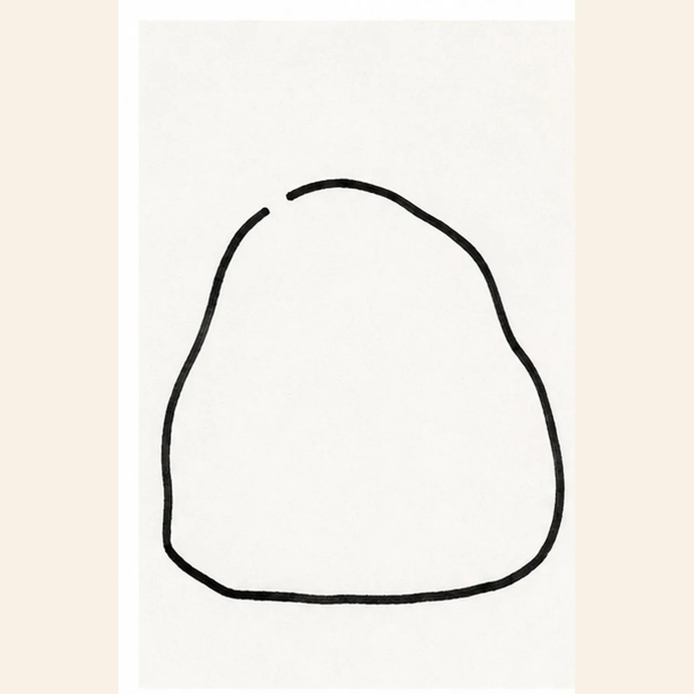
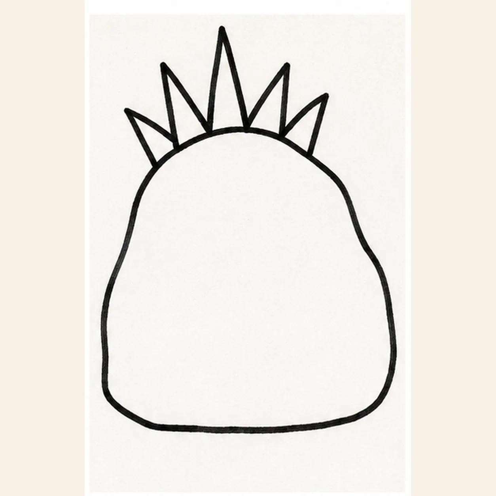
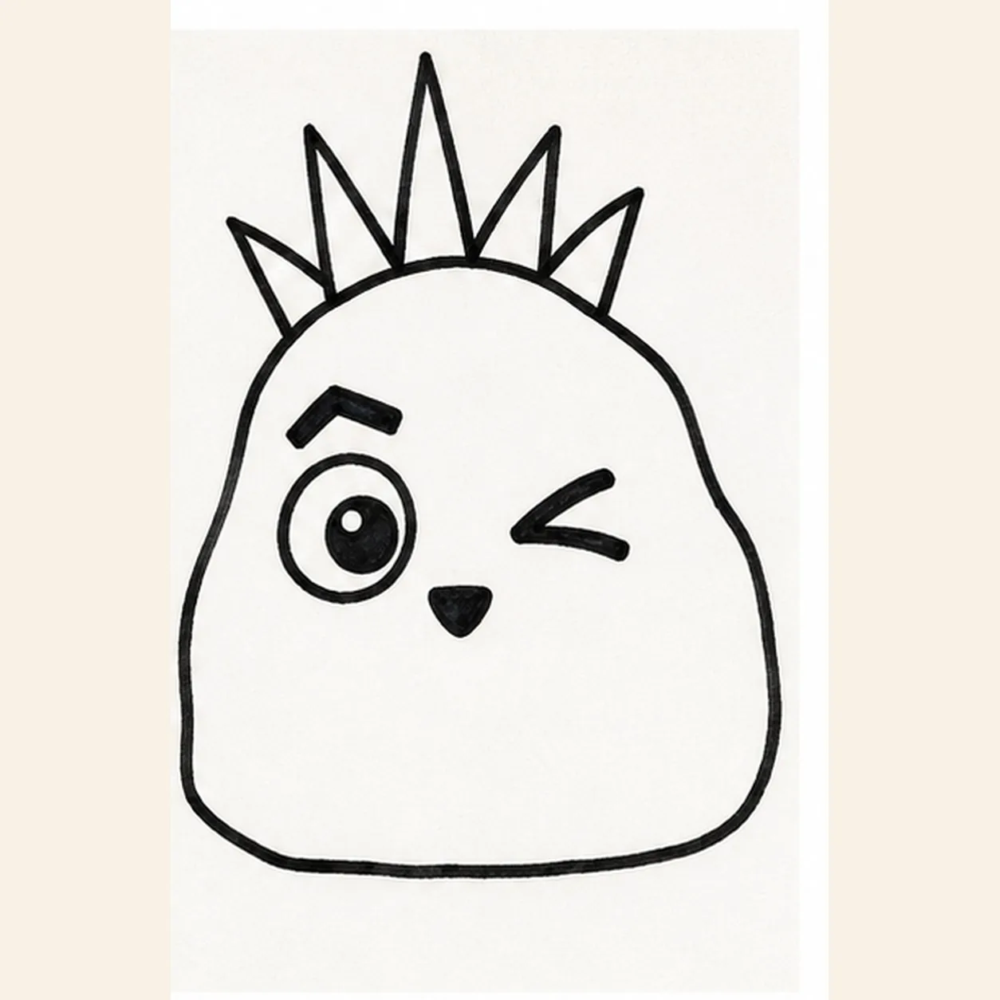
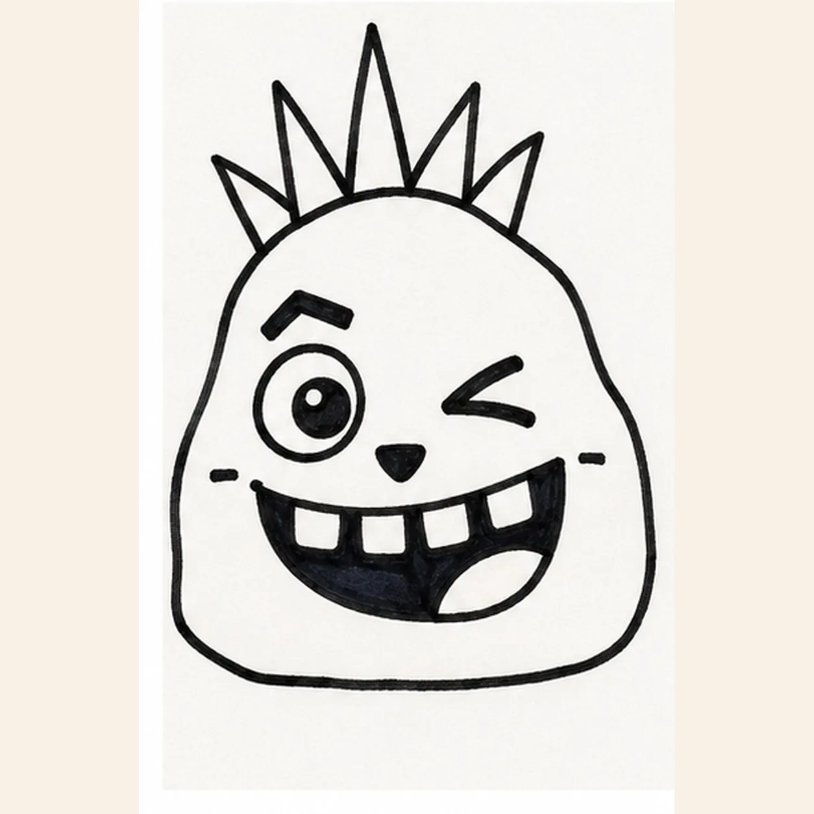
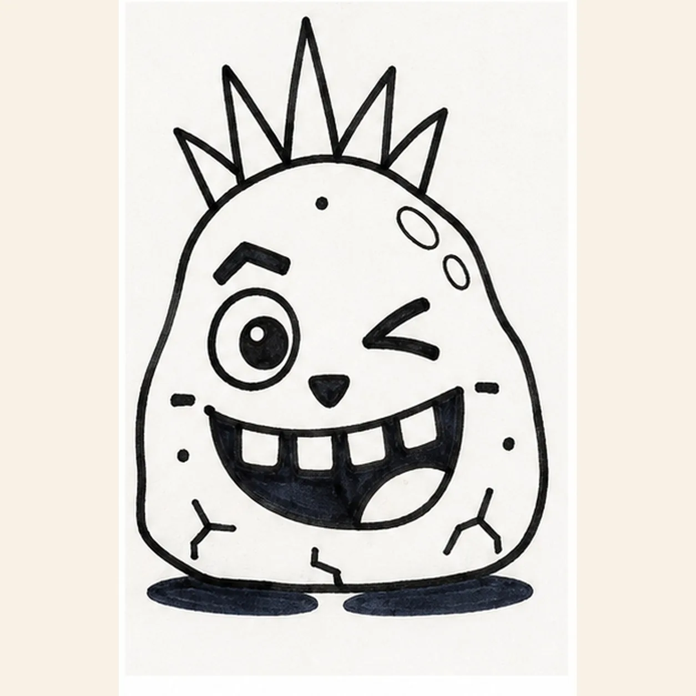

Marker ready?
Let's draw a pet rock
Treat this as one playful practice round: sketch the idea loosely, simplify the shapes, then commit with confident marker outlines and bright fills.
-
01

Draw the pet rock shape
Draw one broad lopsided rock with a rounded top, uneven sides, and a short flat edge along the bottom. Leave the upper-left edge open just enough for the mohawk base.
Marker tip: Keep the opening small and high. The five spikes will close it in the next step.
-
02

Spike up the mohawk
Join the open upper-left edge with one short curved hairline, then grow exactly five connected triangular spikes upward from that base. Make the middle spike tallest.
Marker tip: Count all five spikes before moving on. Vary their heights while keeping every base connected to the rock.
-
03

Make the eyes mismatch
Draw one large round eye on the left with a dark pupil and tiny white highlight. On the right, add one thick bent winking eye. Put one high crooked eyebrow above the round eye and a small rounded triangular nose below them.
Marker tip: Keep the round eye open and the wink compact. Their mismatch gives the face its attitude.
-
04

Open a toothy grin
Draw one wide tilted open grin below the nose. Hang exactly four square teeth from its upper edge, add one curved tongue in the lower-right corner, and place one short cheek dash outside each mouth corner.
Marker tip: Count four teeth and two cheek dashes. Leave the tongue as one clear shape inside the dark mouth.
-
05

Add cracks shine and ground
Add exactly three short angular cracks near the lower edge and exactly three uneven speckles across the open rock surface. Reserve two small white highlight shapes along the upper-right edge, then draw one broken oval shadow underneath.
Marker tip: Keep the three speckles separate from the two cheek dashes. Leave both highlight shapes empty when you color.
-
06

Color the punky pet rock
Fill the established rock with turquoise marker, the five-spike mohawk with magenta, the tongue and cheek dashes with coral, and the shadow with navy. Keep the four teeth, eye highlight, and two rock highlights white, and let overlapping marker strokes show.
Marker tip: Color only the shapes already drawn. Recount five spikes, four teeth, three cracks, three speckles, and two highlights before you stop.

![Handmade felt-tip marker drawing of one face-free upright cartoon hourglass with exactly two rounded teal caps, exactly two attached coral side pillars, one pale-aqua pinched glass vessel, one curved upper golden-yellow sand bed, one centered falling sand stream, one rounded lower sand pile, exactly two open-paper glass highlights, exactly three yellow four-point sparkles, exactly four deep-navy cap notches, thick imperfect black outlines, visible directional marker texture, and one broken deep-navy ground shadow](assets/cartoon-hourglass-with-flowing-sand-finished-v1.webp)
![Handmade felt-tip marker drawing of one face-free upright teal cartoon walkie-talkie leaning slightly right with one top-left antenna, exactly two coral top knobs, one attached coral push-to-talk button on the upper-left side, one blank pale-aqua rounded screen with a dark bezel, exactly five horizontal deep-navy speaker slots, exactly two yellow radio-wave arcs above the antenna, exactly two open-paper case highlights, exactly four lower grip ribs arranged two per side, thick imperfect black outlines, visible directional marker texture, and one broken deep-navy ground shadow](assets/cartoon-walkie-talkie-finished-v1.webp)